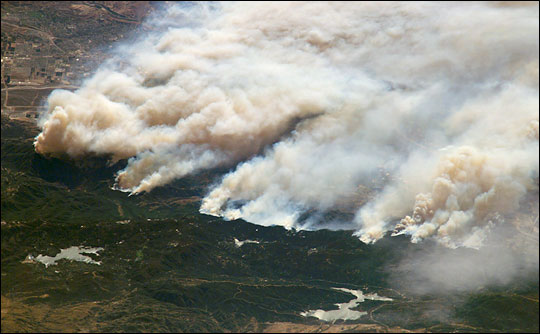
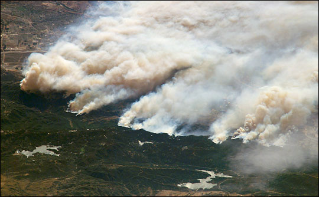

A little Introduction
Fire ecology is the study of how fires interact with ecosystems. Fires, both natural and human-caused, play a vital role in shaping landscapes and maintaining biodiversity. Some species have evolved to depend on periodic fires for seed germination and habitat rejuvenation. Fire can reduce invasive species, release nutrients into the soil, and create diverse habitats. Understanding fire's ecological role helps in managing landscapes and promoting healthy ecosystems in the face of changing fire regimes and climate conditions.

 
